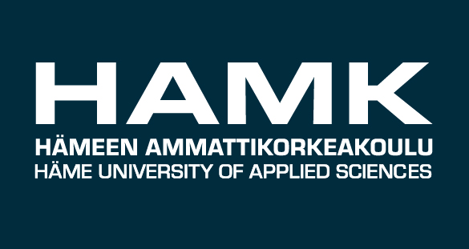

Hämeen Ammattikorkeakoulu
 Hämeen ammattikorkeakoulu (lyh. HAMK) on monialainen ammattikorkeakoulu, joka toimii Kanta-Hämeen ja Pirkanmaan maakunnissa. HAMKissa on 30 amk-tutkintokoulutusta ja 12 ylempää amk-tutkintokoulutusta sekä ammatillinen opettajakorkeakoulu. Koulutuksista 12 on englanninkielisiä. Ammattikorkeakoulun rehtori-toimitusjohtana toimii Pertti Puusaari. Opiskelijoita HAMKissa on yhteensä noin 8800 ja henkilöstöä noin 680.Tutkimus-, kehitys- ja innovaatiotoiminta
Opetuksen lisäksi HAMK tarjoaa tutkimus-, kehitys- ja innovaatiopalveluita. HAMKin tutkimusyksiköt ovat:
- Hamk Bio
- Hamk Edu
- Hamk Smart
- Hamk Tech
Tutkimusyksiköt edistävät aluevaikuttavuutta ja työelämälähtöistä tutkimusta sekä tukevat opetusta painoalueidensa mukaisesti.
Osallistuminen tutkimus-, kehittämis- ja innovaatiotoimintaan (TKI-toiminta) on olennainen osa opiskelua HAMKissa. Alueen elinkeinoelämä, erityisesti pk-yritykset ja julkinen sektori, tekevät yhdessä ammattikorkeakoulun kanssa tutkimusta tai kehittämistyötä, jonka osaksi oppiminen ammattikorkeakoulussa organisoidaan. Erilaisten hanke- ja tutkimuspalveluiden lisäksi HAMKin asiantuntijat hoitavat suoria toimeksiantoja yrityksille ja julkisille toimijoille. Kiinteä vuorovaikutus työelämän kanssa palvelee sekä opiskelijoiden kasvua ammatillisiin asiantuntijatehtäviin että elinkeinoelämän ja yhteisöjen kehittymistä.